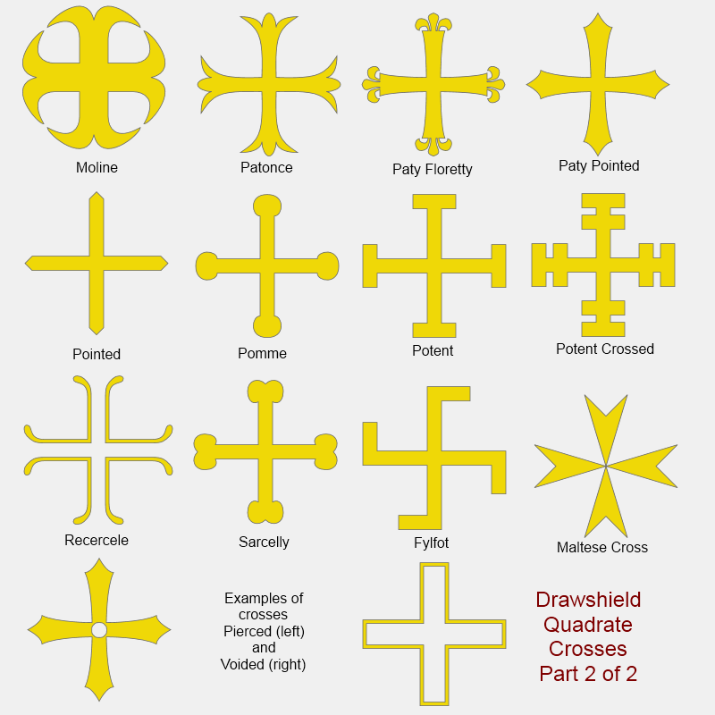
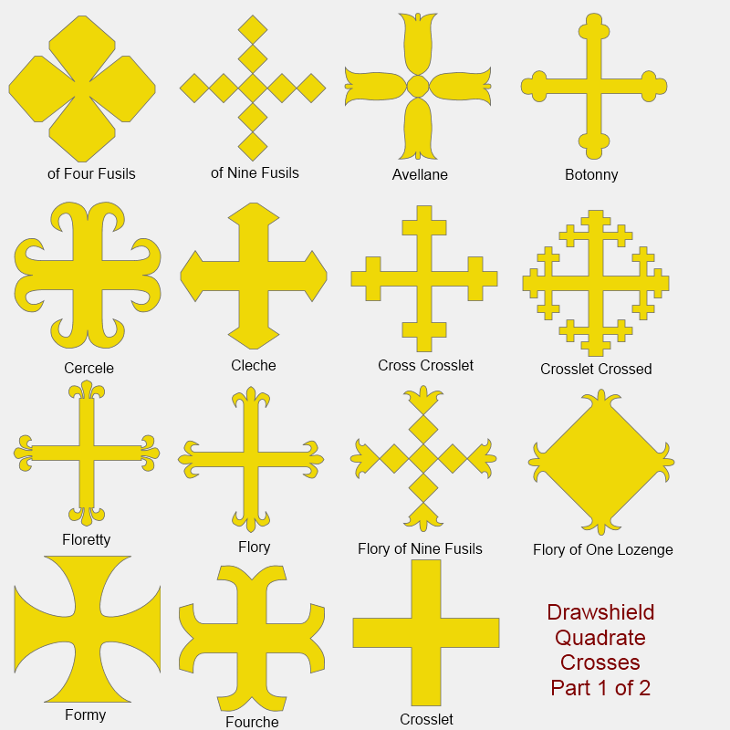

Note that some crosses are ordinaries and hence appear once across the whole of the shield. If there is more than one cross, or a particular named cross (such as one of the four-armed crosses) then they will be treated as charges.
Calvary cross, Greek cross, long cross, Patriarchal Cross, Tau Cross, Portate Cross, Paternoster Cross, Russian Cross, Egyptian Cross, Celtic Cross
The Calvary and Patriarchal crosses may be mounted on N steps where 'N' is 1 to 9.
Many of these are illustrated here.
 
Most of these crosses may be one of pierced, voided, fitchy (at the foot).
The crosslet is quite thin, while the cross couped is thicker, more like the cross on the Swiss flag.
Altar, angel, cherub, church bell, crozier, mitre, pallium, Paschal lamb, The Virgin Mary